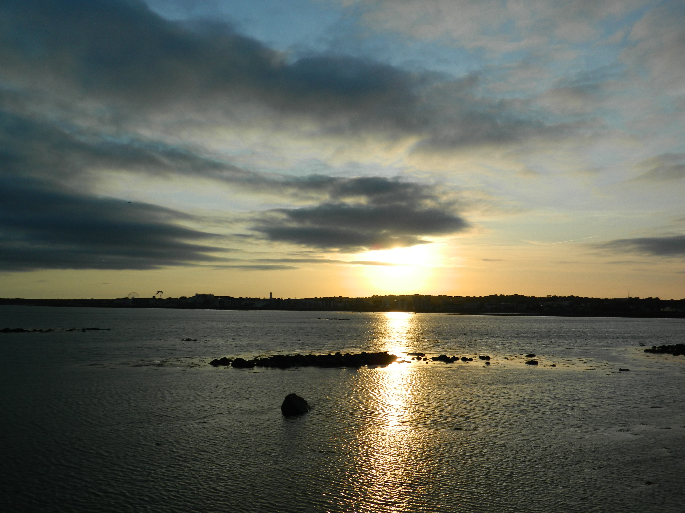
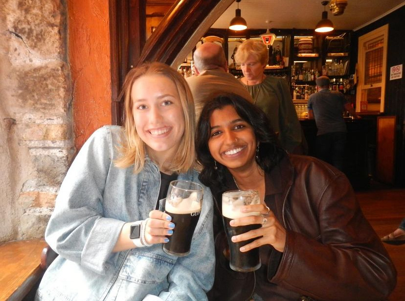
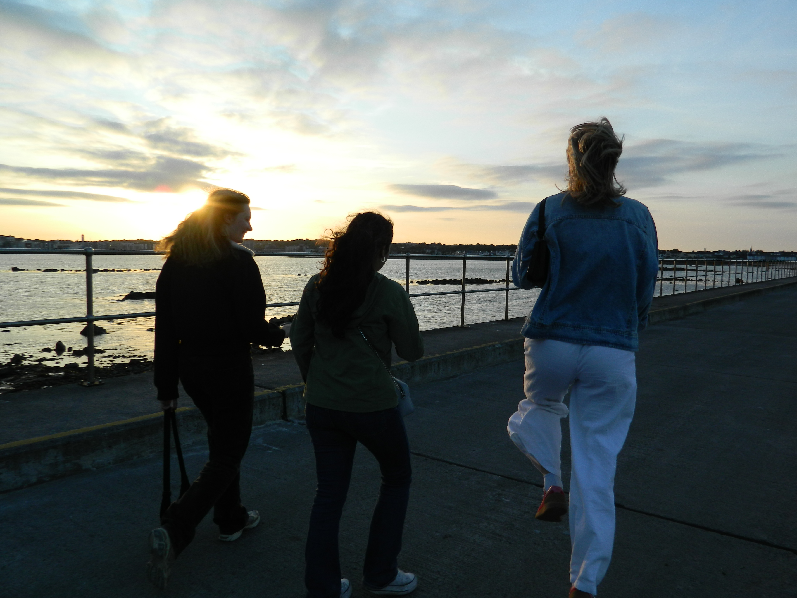

Sunset in Galway

Sarah and I at The Quays Bar

Sophie, Mari, and Sarah at sunsetA bird on the railing by the waterAn old CBM ComputerAn early days Apple Macintosh advertisementBottles in Massimo's Bar in GalwayThe Long Walk: Colorful Houses in GalwayDowntown Galway